| How the monsters live |
The creatures that make a room dangerous are of two sorts. The small ones -- spiders, bats, ghosts, witches and the rest -- are not placed in the castle at all: they are spawned into the player's room, three at most, and wander it until they touch him, are shot, or are left behind. The big five -- the mummy, Dracula, the devil, Frankenstein's monster and the humpback -- live in slots of their own, are dispatched on every pass wherever they are, cannot be shot, and each has a rule of its own. Every example below ran through the game's own code in SkoolKit's simulator, from the first game after loading.
SPAWN_MONSTER_INTO_ROOM is called once a frame from the player's handler, so only while the player is in play. A new room resets SPAWN_ROOM and a 32-frame countdown; when that runs out a creature appears, and from then on one appears on any frame when the low four bits of the refresh register are zero -- one frame in sixteen, near enough -- if one of the three slots at $EE60, $EE70 and $EE80 is free. The slot gets MONSTER_TEMPLATE, the player's room, a type from SPAWN_TYPES by the low four bits of FRAMES, a place near the middle (RANDOM_POSITION) and a random velocity (RANDOM_VELOCITY). For its first 32 passes it is the arrival animation, sprites $58-$5B (SPAWN_MONSTER); then it becomes its type. The sixteen entries of SPAWN_TYPES, read from the game:
| Code | Creature | Chance in 16 | Mover | How it moves (read) | Where it went in 300 passes |
|---|---|---|---|---|---|
| $5C | Spider | 2 | MOVE_ACTOR | a random pair of direction bits every 16 passes; the velocity eased a step a pass towards ±2 | x $21-$62, y $32-$9E |
| $5E | Spiky creature, hops | 2 | MOVE_HOPPER | a counter from -7 to 7, halved into the vertical velocity, restarted with a new random velocity when it tops out: hops | x $2A-$8F, y $31-$9E |
| $98 | Bat, a third kind | 2 | MOVE_FACING_FLYER | the same every 32 passes, the horizontal part ±2; faces the way it flies | x $22-$8E, y $31-$9F |
| $90 | Witch | 2 | MOVE_WITCH | a new random velocity every 16 passes, the vertical half halved; faces the way it flies | x $21-$7E, y $64-$9F |
| $94 | Hooded figure in a robe with a cross on it, facing the way it flies | 2 | MOVE_FACING_FLYER | the same every 32 passes, the horizontal part ±2; faces the way it flies | x $22-$8E, y $31-$9E |
| $60 | Small face with two eyes | 1 | MOVE_FACE | a new random velocity every 17 passes | x $2F-$7E, y $38-$9F |
| $62 | Ghost | 1 | MOVE_GHOST | the same, every 8 passes | x $22-$62, y $4C-$9E |
| $4C | Pumpkin | 1 | MOVE_ACTOR | a random pair of direction bits every 16 passes; the velocity eased a step a pass towards ±2 | x $2A-$8E, y $32-$9E |
| $4E | Bat | 1 | MOVE_BAT | a new random velocity (1 or 2 each way) every 256 passes | x $22-$8F, y $32-$9F |
| $68 | Ghost, a second kind | 1 | MOVE_HOPPER | a counter from -7 to 7, halved into the vertical velocity, restarted with a new random velocity when it tops out: hops | x $2A-$8F, y $31-$9E |
| $6A | Bat, a second kind | 1 | MOVE_ARCS | every 16 passes a random direction, then steps from STEP_VECTORS in turn, swinging from across to down: arcs | x $1E-$8B, y $31-$9E |
The creatures' names are the annotations'. Each was then staged -- written into the first slot as the spawner writes one, arriving, in the middle of room $00, with the knight standing in the south doorway where nothing in the room can reach him and the spawner held off -- and followed for 300 passes of the main loop after its arrival (which took 32 passes here), a dot at each:
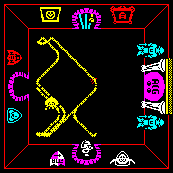
$5C Spider
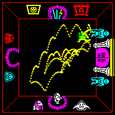
$5E Spiky creature, hops
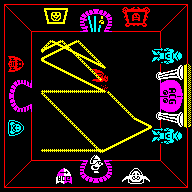
$98 Bat, a third kind
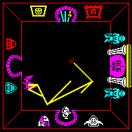
$90 Witch
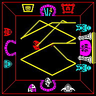
$94 Hooded figure in a robe with a cross on it, facing the way it flies
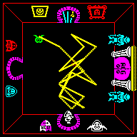
$60 Small face with two eyes
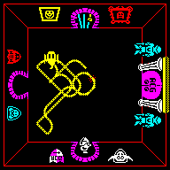
$62 Ghost
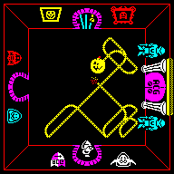
$4C Pumpkin
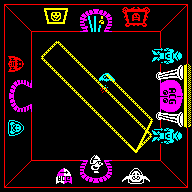
$4E Bat
$68 Ghost, a second kind
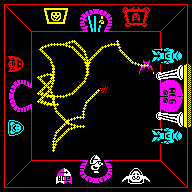
$6A Bat, a second kind
All of them bounce off the room's walk rectangle through STEP_ACTOR and ignore doors and furniture; none leaves its room. Most animate by flipping bit 0 of the sprite.
And a real game, not staged: the knight standing still in room $00 from the start for ten seconds (500 frames), the big five sent away. What happened in the slots:
| When | What |
|---|---|
| 0.18 s (frame 9) | slot 1: a creature arrives (sprite $5B), to become $5E, Spiky creature, hops |
| 0.36 s (frame 18) | slot 2: a creature arrives (sprite $58), to become $60, Small face with two eyes |
| 0.98 s (frame 49) | slot 3: a creature arrives (sprite $58), to become $94, Hooded figure in a robe with a cross on it, facing the way it flies |
| 2.32 s (frame 116) | slot 3: it touches the knight and bursts |
| 2.32 s (frame 116) | life force 232 → 200, score 0 → 155 |
| 2.98 s (frame 149) | slot 3: the burst ends; the slot is free |
| 3.20 s (frame 160) | slot 3: a creature arrives (sprite $58), to become $98, Bat, a third kind |
| 4.52 s (frame 226) | slot 3: it touches the knight and bursts |
| 4.52 s (frame 226) | life force 194 → 162, score 155 → 310 |
| 5.26 s (frame 263) | slot 3: the burst ends; the slot is free |
| 6.14 s (frame 307) | slot 3: a creature arrives (sprite $5B), to become $6A, Bat, a second kind |
| 8.06 s (frame 403) | slot 2: it touches the knight and bursts |
| 8.06 s (frame 403) | life force 152 → 120, score 310 → 465 |
| 8.80 s (frame 440) | slot 2: the burst ends; the slot is free |
| 8.82 s (frame 441) | slot 2: a creature arrives (sprite $58), to become $98, Bat, a third kind |
The first creature came 0.18 s in, with no grace at all: CLEAR_VARIABLES has left SPAWN_ROOM at 0, which is the starting room, and the countdown at 0, so the spawner is already in its one-in-sixteen mode when the knight has risen. Anywhere else, entering the room gives 32 frames first. 3 creatures touched the knight in the ten seconds.
Every small mover calls CHECK_SHOT_HIT and CHECK_HIT, a 12-pixel box each way round the weapon and round the player (see movement). Either way the creature dies. Being caught costs 32 of the life force but pays the same 155 points as a shot.
| Situation | What the game did | The code |
|---|---|---|
| A spider written into a slot on top of the knight (staged) | Life force 240 → 207, score 0 → 155; the spider became sprite $6F, the burst, and its slot was free 16 passes later. | CHECK_HIT, then MONSTER_CAUGHT_PLAYER: LOSE_FOOD_THIRTY_TWO and KILL_MONSTER, which adds 155 and starts a 16-pass burst (COUNTDOWN_ACTOR). |
| A spider staged $28 pixels to the right of the knight, who walks right and fires | The axe reached it in 9 frames: sprite $6C (the burst), score 0 → 155, life force unchanged (239 → 236). | The spider's mover calls CHECK_SHOT_HIT first: a hit sets the weapon's hit flag, which ends its flight, and jumps to KILL_MONSTER. |
| A spider and a ghost staged in the room, then the life force set to 1 | The knight died on the next drain and began to sink (sprite $67, pass 1); both creatures had burst by pass 1, and the score went from 0 to 310. | While the player's sprite is not $01-$30, every small creature's mover ends in KILL_MONSTER (the test at STEP_ACTOR's tail): dying clears the room, and pays for it. |
| The same spider left in room $00 while the knight walks out of the south door | Its slot was emptied 256 passes after he left. | A creature not in the player's room only counts down its +$0F (ACTOR_TICK_TIMER), which its mover zeroes on every pass in the room: 256 passes. |
Their records are the last five monster slots, dispatched every pass by MAIN_LOOP_MONSTERS wherever they are. Each homes in with HOME_IN: a velocity of 1 on each axis towards a target, so a pixel a pass -- slower than the player's two a frame -- inside a slightly smaller rectangle than the player's. While the player is not in play the four hunters turn round and walk away (BIG_MONSTER_STEP). None calls CHECK_SHOT_HIT, so the axe, spell and sword pass through them. Where they start in the first game, read from the running game after START_GAME, and what a touch costs a pass:
| Monster | Record | Starts in | Sprite | Mover | Touch, per pass |
|---|---|---|---|---|---|
| the mummy | $EE90 | room $85 | $70 | MOVE_MUMMY | 8 |
| Dracula | $EEA0 | room $6D | $7C | MOVE_DRACULA | 8 |
| the devil | $EEB0 | room $43 | $78 | MOVE_DEVIL | 8 |
| Frankenstein's monster | $EEC0 | room $55 | $74 | MOVE_FRANKENSTEIN | 8 |
| the humpback | $EED0 | room $56 | $9C | MOVE_HUMPBACK | 16 |
The mummy's room is chosen by PLACE_KEYS with the red key's, so it is the red key's room in every game; the other four start where the template puts them. The hunters head for the player's x and y even from another room, so when he comes back they are wherever he was standing when he left, relative to the room.
MOVE_FRANKENSTEIN: when he touches the player, if FIND_CARRIED finds the spanner ($8B) in the inventory, 1000 points and KILL_MONSTER; otherwise LOSE_FOOD_EIGHT. Staged: the knight put in his room with Frankenstein's monster on top of him, 10 passes each way:
| The knight | Life force | Score | Frankenstein's slot after |
|---|---|---|---|
| no spanner | 240 → 160 | 0 → 0 | sprite $76, room byte $55 |
| carrying the spanner (staged in the first slot) | 240 → 240 | 0 → 1155 | sprite $6F (the burst), room byte $55 |
The kill adds its own 155 to the 1000, and nothing ever refills the slot.
MOVE_DRACULA asks FIND_CARRIED for the crucifix ($8A). With it carried he takes HOME_IN's velocity and turns it round: he runs. Without it, in the player's room, he hunts. Staged in his room, $6D, the knight in the middle: without the crucifix Dracula went from 47 pixels away to within reach in 36 passes; with the knight carrying it, from 17 pixels away to 51 in 120, backed into the wall:
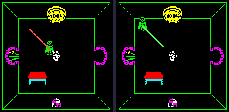
Dracula's 120 passes, without the crucifix (red) and with it (green).
Out of the player's room he wanders. On a pass that falls on a frame when FRAMES is 0 -- about once a second, since the game resets FRAMES every 50 -- he picks a random room from 0 to 127 and moves there if its shape is $00, $01 or $02 (a square hall, a cave or an octagonal hall) and it is not the player's. Left for 60 seconds while the knight stood in room $00, he moved 22 times: $6D, $5A, $54, $74, $25, $56, $07, $4E, $43, $30, $39, $56, $1D, $5A, $65, $75, $39, $2D, $39, $6A, $54, $4E, $6E (shapes $00, $01, $02).
MOVE_MUMMY: if object $80 is in its room it walks to it and sends it to room $6B. Otherwise, while the red key lies in its room, it walks back and forth between two points; once the key is gone it sets bit 7 of its +$06 and hunts the player for the rest of the game. Staged in room $85 with the knight standing in a corner at ($28, $98), the key still in the room: the mummy walked from its place to ($68, $68), the target the template gives it, and then back and forth between ($68, $38) and ($8C, $68), the two its code writes, for 260 passes (3 turns). With the red key in the knight's inventory instead (staged), bit 7 was set and the mummy reached him in 36 passes:
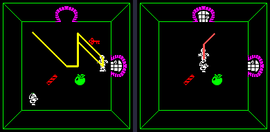
The mummy guarding (yellow) and hunting (red).
MOVE_HUMPBACK looks through the eight collectables $82-$89 (SCAN_COLLECTABLES); if one is in its room it walks to it and empties its record, and the object is gone for the game. Otherwise it stands still. Touching it costs 16 a pass (LOSE_FOOD_SIXTEEN). Staged: object $82 (its record at $EB18) put in room $56 at ($30, $88) with the knight in the middle: the humpback reached it and emptied the record after 78 passes.
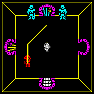
The humpback's walk to the object.
MOVE_DEVIL hunts, costs 8 a pass, and nothing in the code stops him: no object, no weapon. Staged in his room, the knight in the middle, he reached him at pass 28; ten passes of touching took the life force from 239 to 155, eight a pass and the ordinary drain.
Inferred, or not tried: